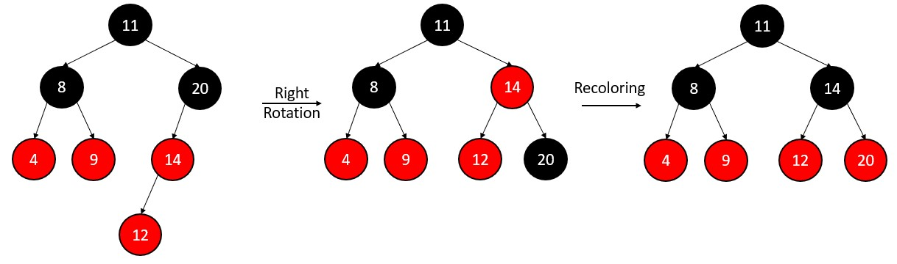

Applying Discounts and Coupons
1.Red-Black Trees
Red-Black Trees can efficiently manage discounts and promotions in
e-commerce platforms. By organizing discount codes along with their
respective values and expiration dates in a balanced tree structure,
they enable quick insertion, deletion, and retrieval of valid codes.

Code:
#include <iostream>
using namespace std;
enum Color {RED, BLACK};
struct Node {
int data;
bool color;
Node *left, *right, *parent;
Node(int data) {
this->data = data;
left = right = parent = nullptr;
this->color = RED;
}
};
class RBTree {
private:
Node *root;
protected:
void rotateLeft(Node *&, Node *&);
void rotateRight(Node *&, Node *&);
void fixInsert(Node *&, Node *&);
void fixDelete(Node *&, Node *);
void inorderHelper(Node *node);
void RBTransplant(Node *u, Node *v);
Node* treeMinimum(Node *node);
public:
RBTree() { root = nullptr; }
void insert(const int &n);
void deleteNode(const int &data);
Node* search(const int &data);
void inorder() { inorderHelper(root); }
};
void RBTree::inorderHelper(Node *root) {
if (root == nullptr)
return;
inorderHelper(root->left);
cout << root->data << " ";
inorderHelper(root->right);
}
Node* RBTree::search(const int &data) {
Node *current = root;
while (current != nullptr) {
if (data == current->data)
return current;
else if (data < current->data)
current = current->left;
else
current = current->right;
}
return nullptr;
}
void RBTree::rotateLeft(Node *&root, Node *&pt) {
Node *pt_right = pt->right;
pt->right = pt_right->left;
if (pt->right != nullptr)
pt->right->parent = pt;
pt_right->parent = pt->parent;
if (pt->parent == nullptr)
root = pt_right;
else if (pt == pt->parent->left)
pt->parent->left = pt_right;
else
pt->parent->right = pt_right;
pt_right->left = pt;
pt->parent = pt_right;
}
void RBTree::rotateRight(Node *&root, Node *&pt) {
Node *pt_left = pt->left;
pt->left = pt_left->right;
if (pt->left != nullptr)
pt->left->parent = pt;
pt_left->parent = pt->parent;
if (pt->parent == nullptr)
root = pt_left;
else if (pt == pt->parent->left)
pt->parent->left = pt_left;
else
pt->parent->right = pt_left;
pt_left->right = pt;
pt->parent = pt_left;
}
void RBTree::fixInsert(Node *&root, Node *&pt) {
Node *parent_pt = nullptr;
Node *grand_parent_pt = nullptr;
while ((pt != root) && (pt->color != BLACK) && (pt->parent->color == RED)) {
parent_pt = pt->parent;
grand_parent_pt = pt->parent->parent;
if (parent_pt == grand_parent_pt->left) {
Node *uncle_pt = grand_parent_pt->right;
if (uncle_pt != nullptr && uncle_pt->color == RED) {
grand_parent_pt->color = RED;
parent_pt->color = BLACK;
uncle_pt->color = BLACK;
pt = grand_parent_pt;
} else {
if (pt == parent_pt->right) {
rotateLeft(root, parent_pt);
pt = parent_pt;
parent_pt = pt->parent;
}
rotateRight(root, grand_parent_pt);
swap(parent_pt->color, grand_parent_pt->color);
pt = parent_pt;
}
} else {
Node *uncle_pt = grand_parent_pt->left;
if (uncle_pt != nullptr && uncle_pt->color == RED) {
grand_parent_pt->color = RED;
parent_pt->color = BLACK;
uncle_pt->color = BLACK;
pt = grand_parent_pt;
} else {
if (pt == parent_pt->left) {
rotateRight(root, parent_pt);
pt = parent_pt;
parent_pt = pt->parent;
}
rotateLeft(root, grand_parent_pt);
swap(parent_pt->color, grand_parent_pt->color);
pt = parent_pt;
}
}
}
root->color = BLACK;
}
Node* BSTInsert(Node* root, Node* pt) {
if (root == nullptr)
return pt;
if (pt->data < root->data) {
root->left = BSTInsert(root->left, pt);
root->left->parent = root;
} else if (pt->data > root->data) {
root->right = BSTInsert(root->right, pt);
root->right->parent = root;
}
return root;
}
void RBTree::insert(const int &data) {
Node *pt = new Node(data);
root = BSTInsert(root, pt);
fixInsert(root, pt);
}
void RBTree::deleteNode(const int &data) {
Node *v = search(data);
if (v == nullptr)
return;
Node *u;
Node *x = v;
bool originalColor = x->color;
if (v->left == nullptr) {
u = v->right;
RBTransplant(v, v->right);
} else if (v->right == nullptr) {
u = v->left;
RBTransplant(v, v->left);
} else {
x = treeMinimum(v->right);
originalColor = x->color;
u = x->right;
if (x->parent == v) {
if (u) u->parent = x;
} else {
RBTransplant(x, x->right);
x->right = v->right;
x->right->parent = x;
}
RBTransplant(v, x);
x->left = v->left;
x->left->parent = x;
x->color = v->color;
}
delete v;
if (originalColor == BLACK)
fixDelete(root, u);
}
void RBTree::fixDelete(Node *&root, Node *x) {
while (x != root && (x == nullptr || x->color == BLACK)) {
if (x == x->parent->left) {
Node *w = x->parent->right;
if (w->color == RED) {
w->color = BLACK;
x->parent->color = RED;
rotateLeft(root, x->parent);
w = x->parent->right;
}
if ((w->left == nullptr || w->left->color == BLACK) &&
(w->right == nullptr || w->right->color == BLACK)) {
w->color = RED;
x = x->parent;
} else {
if (w->right == nullptr || w->right->color == BLACK) {
if (w->left)
w->left->color = BLACK;
w->color = RED;
rotateRight(root, w);
w = x->parent->right;
}
w->color = x->parent->color;
x->parent->color = BLACK;
if (w->right)
w->right->color = BLACK;
rotateLeft(root, x->parent);
x = root;
}
} else {
Node *w = x->parent->left;
if (w->color == RED) {
w->color = BLACK;
x->parent->color = RED;
rotateRight(root, x->parent);
w = x->parent->left;
}
if ((w->left == nullptr || w->left->color == BLACK) &&
(w->right == nullptr || w->right->color == BLACK)) {
w->color = RED;
x = x->parent;
} else {
if (w->left == nullptr || w->left->color == BLACK) {
if (w->right)
w->right->color = BLACK;
w->color = RED;
rotateLeft(root, w);
w = x->parent->left;
}
w->color = x->parent->color;
x->parent->color = BLACK;
if (w->left)
w->left->color = BLACK;
rotateRight(root, x->parent);
x = root;
}
}
}
if (x)
x->color = BLACK;
}
void RBTree::RBTransplant(Node *u, Node *v) {
if (u->parent == nullptr)
root = v;
else if (u == u->parent->left)
u->parent->left = v;
else
u->parent->right = v;
if (v)
v->parent = u->parent;
}
Node* RBTree::treeMinimum(Node *node) {
while (node->left != nullptr)
node = node->left;
return node;
}
int main() {
RBTree tree;
tree.insert(10);
tree.insert(20);
tree.insert(30);
tree.insert(40);
tree.insert(50);
tree.insert(25);
cout << "Inorder traversal of created tree\n";
tree.inorder();
int key = 30;
tree.deleteNode(key);
cout << "\nInorder traversal after deletion of " << key << endl;
tree.inorder();
int searchKey = 25;
Node* searchNode = tree.search(searchKey);
if (searchNode != nullptr)
cout << "\nFound node with key " << searchKey << endl;
else
cout << "\nNode with key " << searchKey << " not found" << endl;
return 0;
}
Time Complexity
| Function |
Amortized |
Worst case |
| Search |
O(log n) |
O(log n) |
| Insert |
O(log n) |
O(log n) |
| Delete |
O(log n) |
O(log n) |